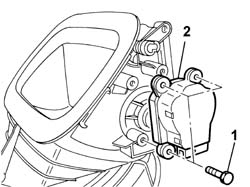
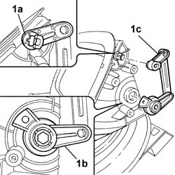
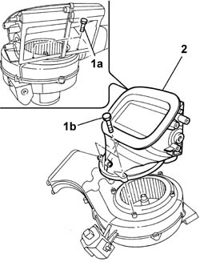

5040C78 AIR INTAKE AND RECIRCULATION FLAP - R.R. WITH FAN ASSEMBLY REMOVED
- Path
- Procedures > 50 AUXILIARY UNITS > 5040 AIR CONDITIONING CASING AND COMPONENTS > 5040C AIR CONDITIONER BOX AND COMPONENTS > 5040C78 AIR INTAKE AND RECIRCULATION FLAP - R.R. WITH FAN ASSEMBLY REMOVED
- Kind
- repair procedure (removal / refitting; the operation number is the code)
- Applies to
- all engines; all production periods
- Interactive page
- https://sloeber94.github.io/elrnDB-fUlss/en/#/179007487
Applies to: all engines; all production periods
 Removing
Removing
 Refitting
Refitting1. Undo the retaining bolts.
2. Release the flap control motor and remove it.

Applies to: all engines; all production periods
1. Release the upper (1a) and lower (1b) fastenings and remove the flap control linkage (1c).

Applies to: all engines; all production periods
1. Undo the fixing bolts (1a) and (1b).
2. Remove the intake air and recirculation flap.

Applies to: all engines; all production periods
Refitting
Removing- Position the recirculation air intake flap and tighten the fixing bolts.
- Position the flap control linkage and secure it in the special housings.
- Position the flap control motor and tighten the fixing bolts.